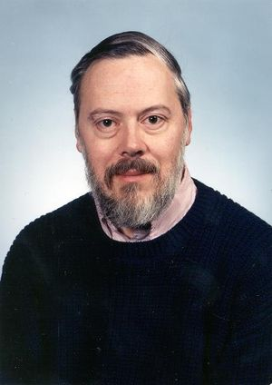

Dennis Ritchie
(September 9,1941-October 12,2011)

Timeline:
- 1941: Dennis Ritchie was born on September 9th, 1941 in Bronxville, New York.
- 1967: In 1967, Ritchie began to work at Bell Labs. Here, he worked with a man named Kenneth Thompson and they began to work on a project called the Unix.
- In 1968, Ritchie graduated from Harvard University with degrees in Mathematics and Physics. He earned his PhD with a thesis about "Program Structure and Computational Complexity".
- 1969: Bell Labs decides to remove themselves from the Multics operating system project that Ritchie and Thompson were working together on. Ritchie aided Thompson in producing this single-memory operating system.
- On November 3rd, 1971, Ritchie and Thompson release the UNIX operating system. The UNIX was a multiuser operating system that was able to function on a variety of platforms and totally changed technology forever.
- 1973: Because the UNIX was written in machine language, Ritchie worked endlessly to create a language that simplified the system, as well as make it more accessible. Then "C" Language was created.
- 1974: Ritchie received an award for his work on his paper about his languages and systems regarding the UNIX.
- In 1982, Ritchie and Thompson were awarded the IEEE Emmanuel Piore Award.
- 1983: He and Thompson also got awarded the A.M.Turing an award due to the development of their generic operating system theory, specifically the UNIX operating system.
- 1983: Both again, they received an award for their generic operating systems theory and their UNIX operating system.
- In 1988, Ritchie was elected into the United States National Academy of Engineering.
- 1990: Ritchie is promoted to leader of the Computing Techniques Research Department at Lucent Technologies (previously known as Bell Labs).
- In 1994, Ritchie is awarded the Computer Pioneer Award for his contribution to the UNIX operating system.
- In 1995, Ritchie released the Plan 9 operating system. Along with his team, he worked to integrate graphics and forms of networking into the UNIX operating system, which is known as Plan 9.
- 1996: The Inferno Operating System was developed by Dennis Ritchie on behalf of Bell Labs. The operating system was a distributed operating system as free software.
- 1999: Ritchie and Thompson are recognized by current president, Bill Clinton, for their work on the UNIX operating system as well as their work on the "C" programming language.
- Then, on October 12th in 2011, Dennis Ritchie passes away in Berkeley Heights, NJ.
Facts: